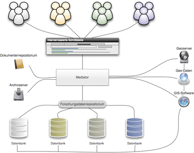

English Version
What is ArcheoInf?

ArcheoInf aims at merging primary data acquired in different archaeological excavations and field surveys. It will provide one single point of access to primary data from heterogeneous information systems.
The autonomy of these different databases will not be affected. Archaeological primary data is linked to geoinformatic data and different library services, i.e. an institutional repository. Thus, ArcheoInf will constitute a comprehensive data pool for archaeological research.
ArcheoInf is funded by the German Research Foundation.
Modules – what does ArcheoInf offer?

Archeoinf offers a mediator which is capable to search simultaneously in many herogeneous databases without changing the interface.
The mediator is based on a comprehensive thesaurus with a maximum number of archaeology subjects and a semantic web-enabled ontology providing a comfortable search in archaeological data.
Furthermore you have access to archaeological pictures and factual information, electronic full text and bibliographic data on an archive server and a document repository in sense of the open access idea.
A GeoServer saves the geo information in a standardized form for cartographic representation through the internet. WebGIS is used as client for background maps where various services as Google MapsTM and World Wind are involved. In this was the user will have comfortably presented sites on the maps with variable scales. ArcheoInf exclusively uses the WGS84 rference system (or ETRS89) to guarantee the coherent storage and presentation of all geo data and to be compatible with GPS. Transformation algorithms offer automated services for projects using the local geographic system or the current country system.
Participation – ArcheoInf and partners

ArcheoInf’s central aspect is the autonomy of the databases; they should remain unchanged in ther structure. Databases in progress are updated by the current project as usual. Completed data collections will be available on the archive server for a lang term.
Rights management enables ongoing and unpublished projects to limit the access to the involved scientists and to give acceess ti initial selectively, e.g,. in research reports.
ArcheoInf sees itself as open structure for each archaeological project. In the project ArcheoInf cooperates with several partners from different universities and research institutes. ArcheoInf has a scientific advisory board at its side.
The ArcheoInf Consortium
- Institut für Archäologische Wissenschaften der Ruhr-Universität Bochum
- Archäologisches Institut und Sammlung der Gipsabgüsse der Georg-August-Universität Göttingen
- Lehrstuhl für Softwaretechnologie in der Fakultät für Informatik der Technischen Universität Dortmund
- Fachbereich Vermessung und Geoinformatik der Hochschule Bochum
- Universitätsbibliothek Bochum
- Universitätsbibliothek Dortmund